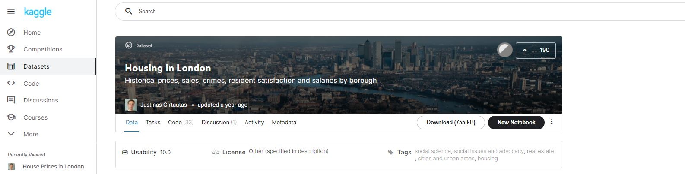
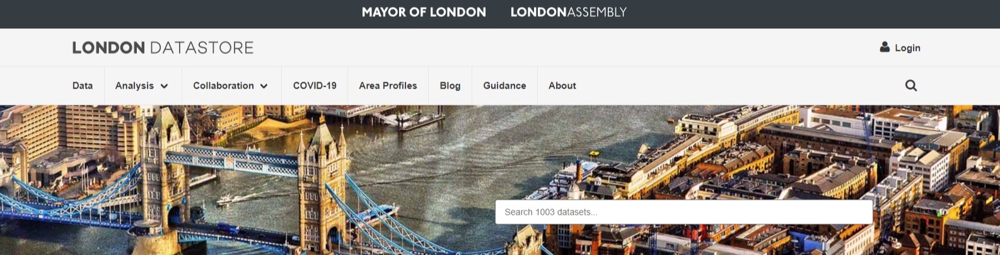
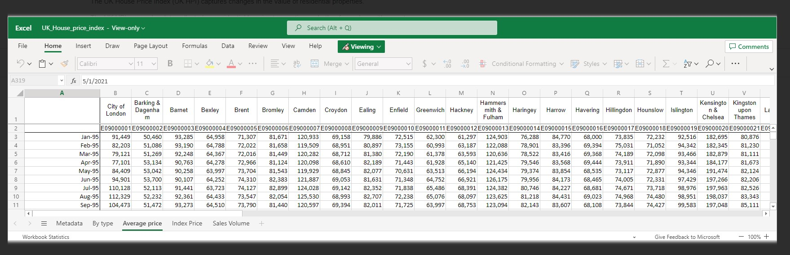

UK House Price Index
changes in the value of residential properties
Acquiring our data from the London Data Store
I started my search like most analysts would. Looking for readily available, clean datasets. Kaggle is a great place for this. Kaggle is a site that allows users to find, publish and collectively explore datasets.
I found a good dataset on ‘housing in London’. This provided me insights into what data was possible to acquire.
Upon further investigation I found that data only went up until the end of 2019. Being more interested in current events and the possibility of improving the dataset I set out to build my own dataset using the London Data Store as referenced in the description of the Kaggle data.
The London Data Store offers all sorts of publicly available information of the city of London and each of its boroughs. Thankfully this means that we don’t have to go round London trying to collect the data ourselves!
Significant amounts of data sets are publicly available however we must have the licence to use this data in our analysis. The Data contained on the London Data Store has been released under UK Open Government License v2 and v3 and therefore we may use this for public analysis.
Now we have decided on improving upon the initial Kaggle dataset we found, we must now act to locate and acquire the data outlined in from the initial source. We will download the most up to date data and hope none of the previous data has disappeared from the site!
Most of the data was thankfully still available ready for download in a csv format. This is perfect as we will be able to manipulate this with Power Query in Excel and import this into Microsoft SQL Server Management Studio.
I have detailed out all the datasets below so that if you are interested you can also view, download and build your own set. Just follow along!
changes in the value of residential properties
Annual Survey of Hours and Earnings (ASHE)
household waste which is recycled or composted
number of jobs in an area - Residents & Commuters

stock estimates by local authority
estimates, covering each year between 1999 and 2020
Estimates of personal well-being from the Annual Population Survey (APS)